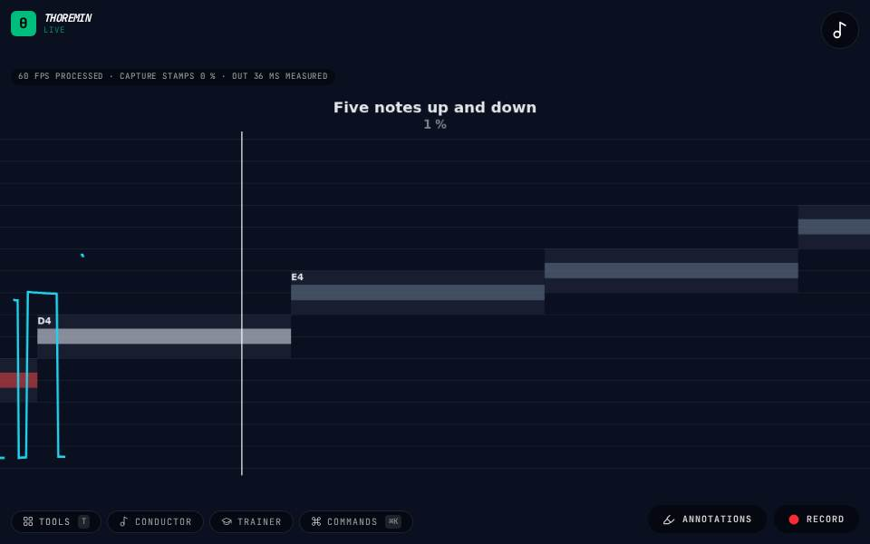

Sing Along

What to do
- Allow the microphone, choose a lesson in the Listening games section and press Start.
- After the count-in, sing each bar as it reaches the line; your voice draws the blue trail.
- A bar turns gold where your voice is on it. Any octave counts.
A karaoke game: the notes of a melody come toward you as bars, and the game listens to your voice and shows how much of each note you sang in tune.
How it works
The game hears your pitch about a hundred times a second and draws it as a trail over the bars. A bar is as thick as the tolerance: inside it you are on the note. Each note is scored by how much of its length your voice stayed inside, the way karaoke games do, so a note started late but held in tune still scores, and sliding through every pitch does not.
During the count-in the game plays the first note so you can find it. It plays nothing while you sing, because the microphone would hear it as you. With a loudspeaker near the microphone, headphones help.
Difficulty sets the tolerance: easy is a semitone and a half either side, normal a semitone, hard half a semitone. Transpose moves the whole melody into your range.
Settings
Listening games in the editor: the game, the lesson, the difficulty, transposing, whether any octave counts, and whether the first note plays in the count-in. Start and Stop are there too, and the last result.
Its settings: Listening games. Every knob: the manual.